Module for the connection between odoo and devices of the zkteco brand for the control of employee assistance. It allows you to manage the creation of users and assistance from your system in odoo, it adapts to the time zone, generating all this easier for the management of human resources of your company.
How to use?
1- Assigning the role to the person in charge of administering the Zkteco device, there are two levels of access according to the responsibilities.
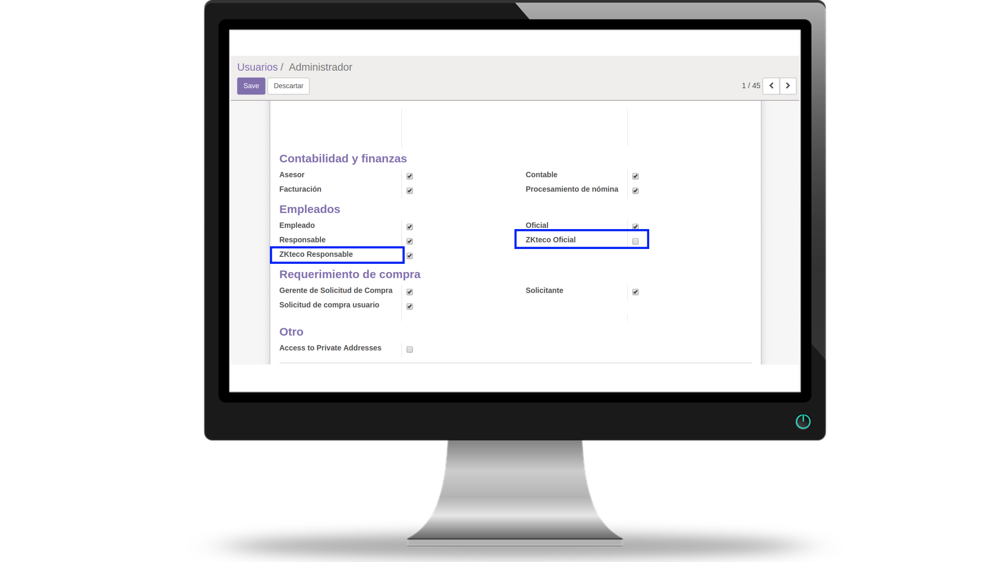
2- Create the zkteco machine record indicating the ip of the device, the port and the location.
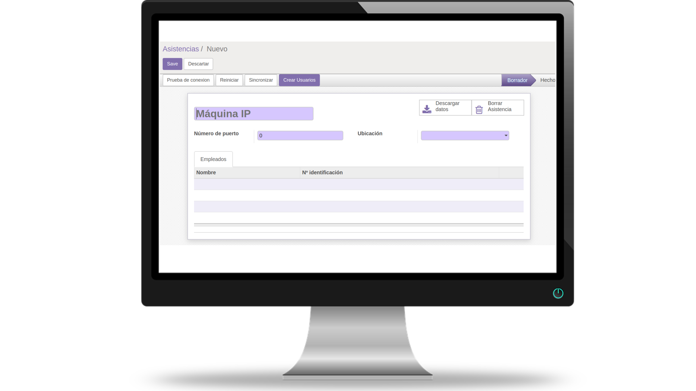
3- Test the connection
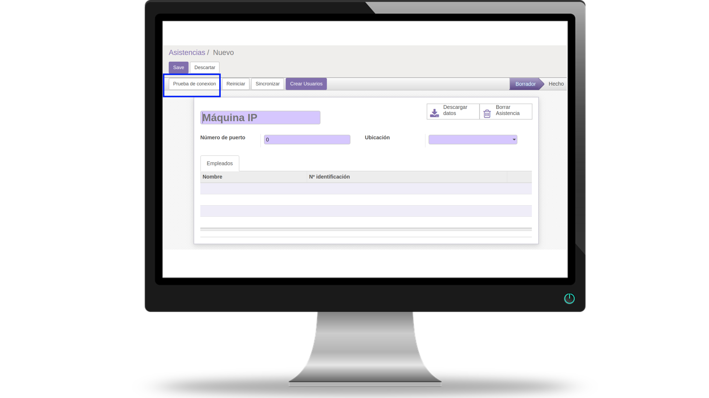
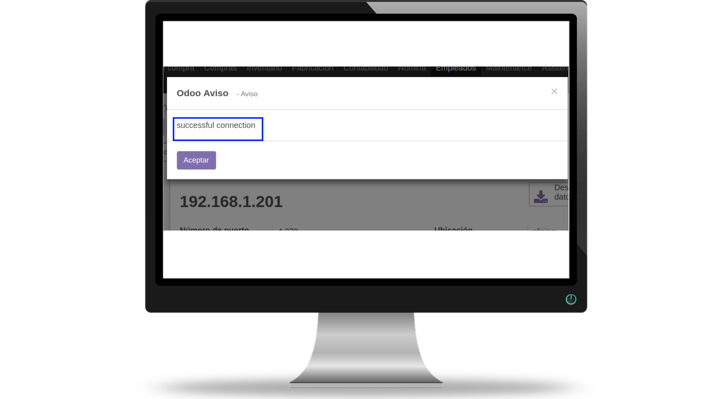
4- If there are already employees registered in the zkteco machine, we can synchronize the data with the employees in the odoo database, for this purpose the registration id in zkteco and the data stored in the Identification ID field of the employee form must match.
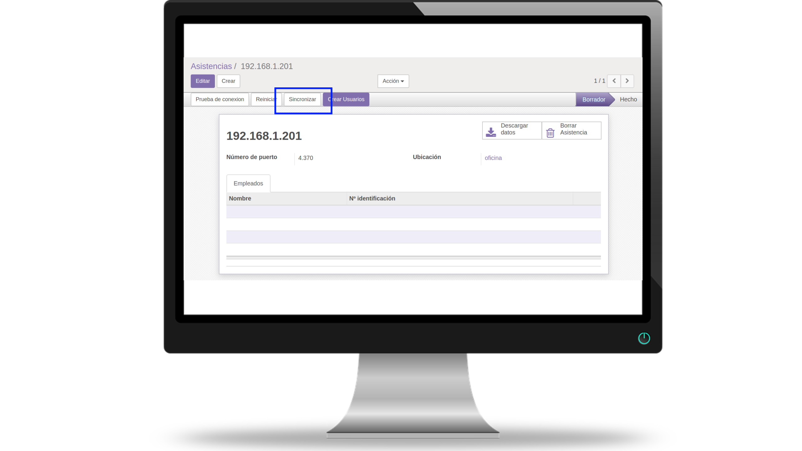
5- Create employees as users of the zkteco machine.
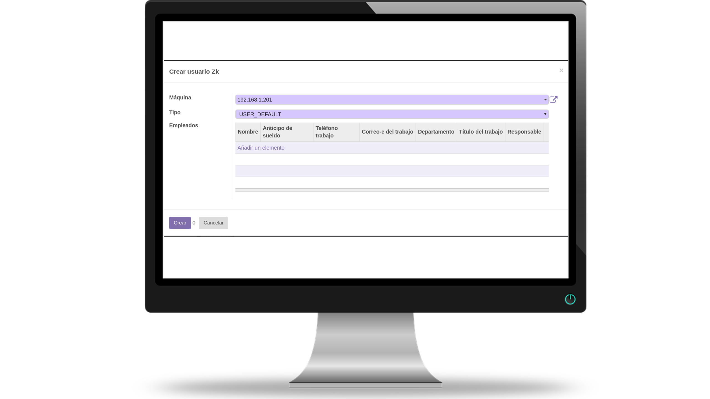
6- Once the employee is associated, we can see in the register of the machine the summary of employees registered in this machine.
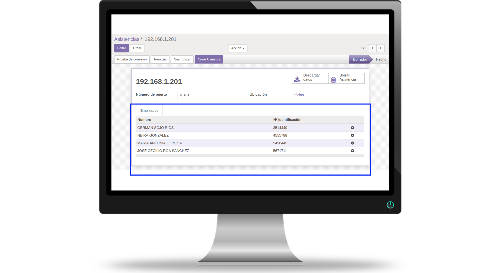
7- We can also check from the employee's date the locations and machines where it is registered.
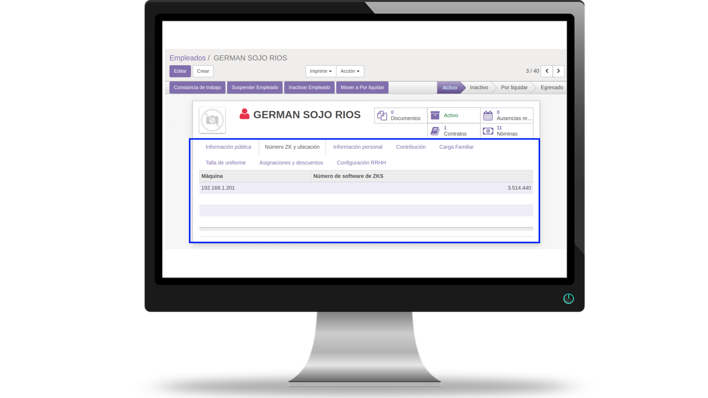
8- From the registration of the zkteco machine we click on the "Download data" button and all device assists will be recorded in our odoo assistance module.
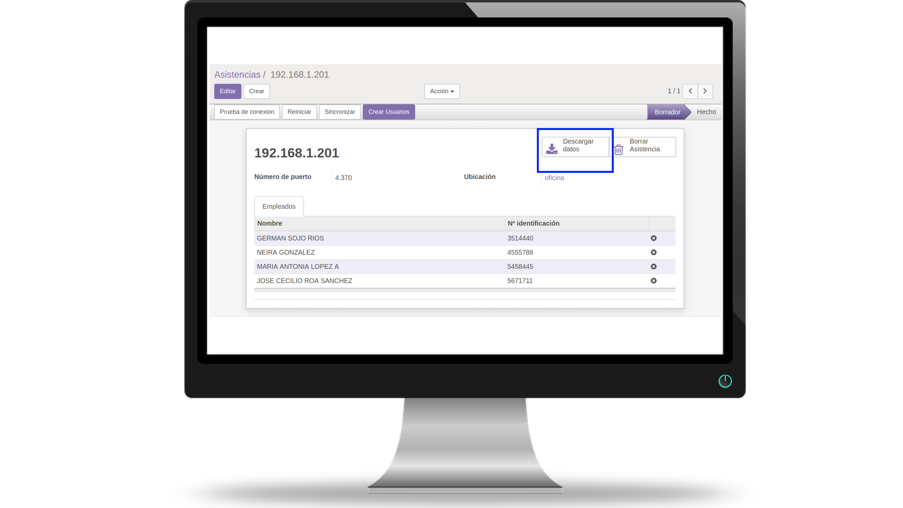
9- We check the records from the help menu to verify that the data was successfully loaded from the zkteco device.
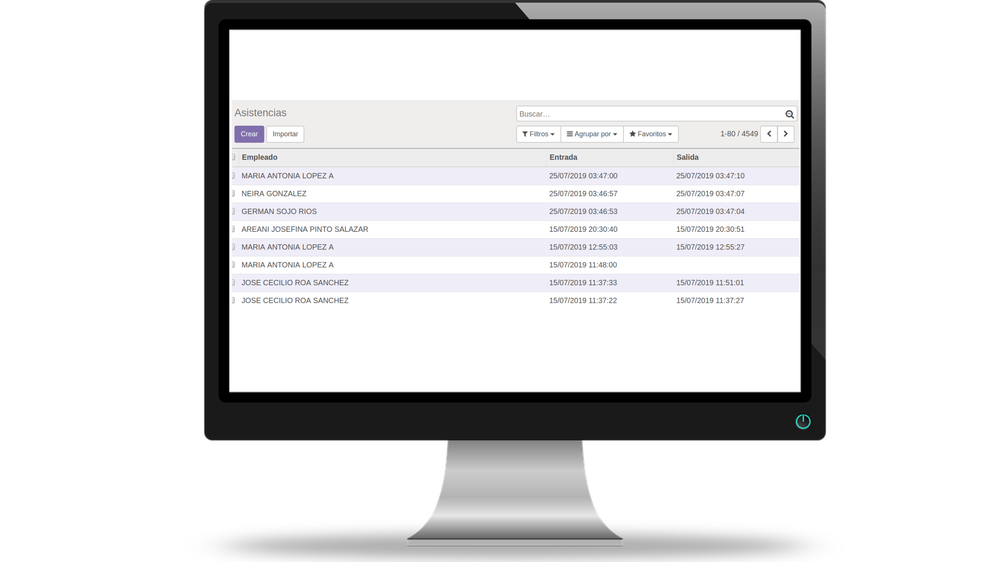
10- Delete assistance data stored on the zkteco device.
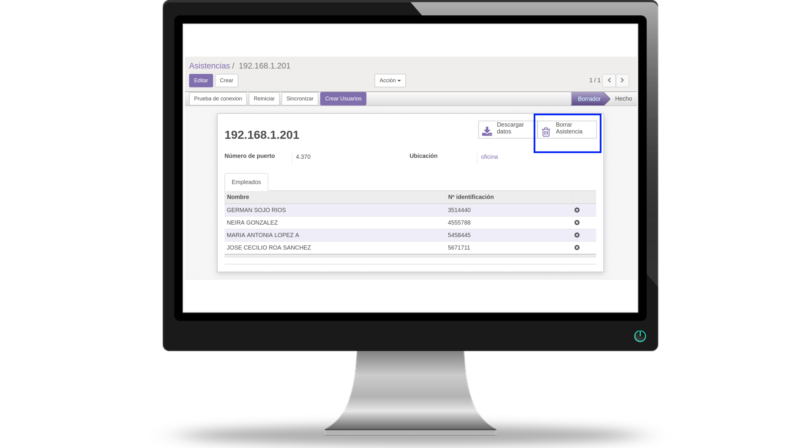
This module was developed to be compatible with any device with zkteco technology.
Devices tested with the module.
U580
iFace402
iFace800
MA300
T4-C
iClock260
K20
VF680
iClock260
K14
K30
Ronald Jack T8
If you have a zkteco device with a different model, I can contact us for compatibility tests.